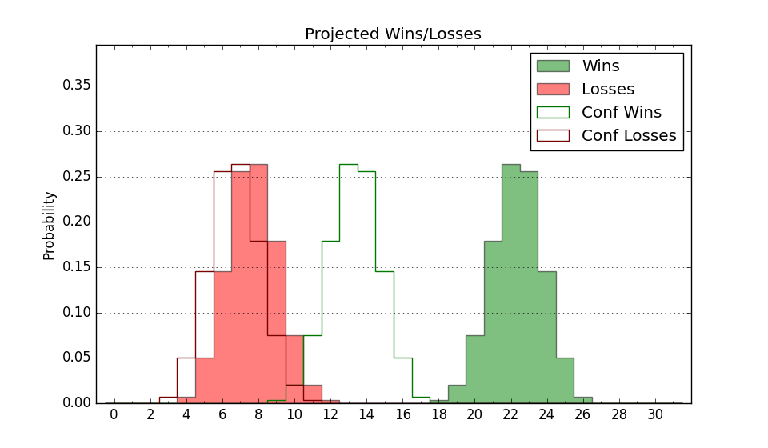

| Home | Game Probabilities | Conferences | Preseason Predictions | Odds Charts | NCAA Tournament |
| City: | Coral Gables, Florida | |
| Conference: | ACC (3rd)
| |
| Record: | 7-3 (Conf) 16-4 (Overall) | |
| Ratings: | Comp.: 16.8 (41st) Net: 17.2 (38th) Off: 115.8 (14th) Def: 98.6 (115th) SoR: 80.7 (22nd) |
| Remaining | ||||||
|---|---|---|---|---|---|---|
| Date | Opponent | Win Prob | Pred. | |||
| 1/28 | @ Pittsburgh (64) | 44.3% | L 74-76 | |||
| 1/31 | Virginia Tech (50) | 68.9% | W 77-72 | |||
| 2/4 | @ Clemson (69) | 45.4% | L 74-76 | |||
| 2/6 | Duke (36) | 64.4% | W 75-71 | |||
| 2/11 | Louisville (313) | 97.4% | W 86-60 | |||
| 2/13 | @ North Carolina (29) | 31.1% | L 75-81 | |||
| 2/18 | Wake Forest (77) | 77.8% | W 85-76 | |||
| 2/21 | @ Virginia Tech (50) | 39.4% | L 73-76 | |||
| 2/25 | Florida St. (176) | 90.9% | W 85-69 | |||
| 3/4 | Pittsburgh (64) | 73.1% | W 79-71 | |||
| Previous | Game Score | |||||
| Date | Opponent | Win Prob | Result | Off | Def | Net |
| 11/7 | Lafayette (232) | 94.5% | W 67-54 | -7.9 | 5.9 | -2.0 |
| 11/11 | UNC Greensboro (120) | 85.5% | W 79-65 | 9.3 | -7.8 | 1.5 |
| 11/15 | Florida A&M (357) | 99.1% | W 87-61 | -8.9 | -6.0 | -14.9 |
| 11/19 | (N) Providence (39) | 49.6% | W 74-64 | -1.8 | 18.8 | 17.0 |
| 11/20 | (N) Maryland (31) | 47.3% | L 70-88 | -8.2 | -23.6 | -31.8 |
| 11/23 | St. Francis NY (351) | 98.6% | W 79-56 | -12.7 | 4.7 | -8.0 |
| 11/27 | @UCF (56) | 40.9% | W 66-64 | 3.2 | 10.5 | 13.7 |
| 11/30 | Rutgers (18) | 56.0% | W 68-61 | 6.1 | 9.8 | 15.9 |
| 12/4 | @Louisville (313) | 91.6% | W 80-53 | -10.3 | 22.3 | 12.0 |
| 12/7 | Cornell (106) | 83.0% | W 107-105 | 10.3 | -23.6 | -13.3 |
| 12/10 | North Carolina St. (49) | 68.7% | W 80-73 | 1.4 | 0.3 | 1.7 |
| 12/17 | St. Francis PA (316) | 97.4% | W 91-76 | 4.8 | -15.9 | -11.0 |
| 12/20 | Virginia (15) | 51.4% | W 66-64 | -9.1 | 16.5 | 7.4 |
| 12/30 | @Notre Dame (171) | 73.9% | W 76-65 | -2.7 | 12.2 | 9.5 |
| 1/4 | @Georgia Tech (166) | 73.1% | L 70-76 | -12.6 | -3.9 | -16.5 |
| 1/11 | Boston College (191) | 91.6% | W 88-72 | 18.2 | -20.6 | -2.4 |
| 1/14 | @North Carolina St. (49) | 39.2% | L 81-83 | 5.5 | -2.1 | 3.4 |
| 1/16 | Syracuse (92) | 80.6% | W 82-78 | 6.8 | -10.1 | -3.3 |
| 1/21 | @Duke (36) | 34.7% | L 66-68 | 2.0 | 4.6 | 6.6 |
| 1/24 | @Florida St. (176) | 74.5% | W 86-63 | 5.9 | 13.0 | 18.9 |
| Stats & Trends | |||||
|---|---|---|---|---|---|
| Current | Day | Week | Month | Season | |
| Composite | 16.8 | -0.0 | +1.5 | +2.8 | +8.0 |
| Comp Rank | 41 | -1 | +7 | +18 | +44 |
| Net Efficiency | 17.2 | -0.0 | +1.4 | +2.1 | -- |
| Net Rank | 38 | -2 | +9 | +21 | -- |
| Off Efficiency | 115.8 | +0.0 | +0.4 | +2.2 | -- |
| Off Rank | 14 | -- | -- | +3 | -- |
| Def Efficiency | 98.6 | -0.0 | +1.0 | -0.2 | -- |
| Def Rank | 115 | -3 | +26 | +10 | -- |
| SoS Rank | 86 | -3 | +22 | +104 | -- |
| Exp. Wins | 22.3 | -0.0 | +0.4 | -0.4 | +5.9 |
| Exp. Conf Wins | 13.3 | -0.0 | +0.4 | +0.5 | +4.5 |
| Conf Champ Prob | 8.8 | -0.4 | -1.2 | -3.3 | +7.6 |

| Advanced Stats | ||
|---|---|---|
| Stat | Value | Rank |
| Off Eff FG % | 0.557 | 19 |
| Off Ast Ratio | 0.162 | 53 |
| Off ORB% | 0.317 | 61 |
| Off TO Rate | 0.138 | 43 |
| Off FT Ratio | 0.329 | 130 |
| Def Eff FG % | 0.482 | 108 |
| Def Ast Ratio | 0.145 | 203 |
| Def ORB% | 0.288 | 260 |
| Def TO Rate | 0.163 | 135 |
| Def FT Ratio | 0.237 | 22 |